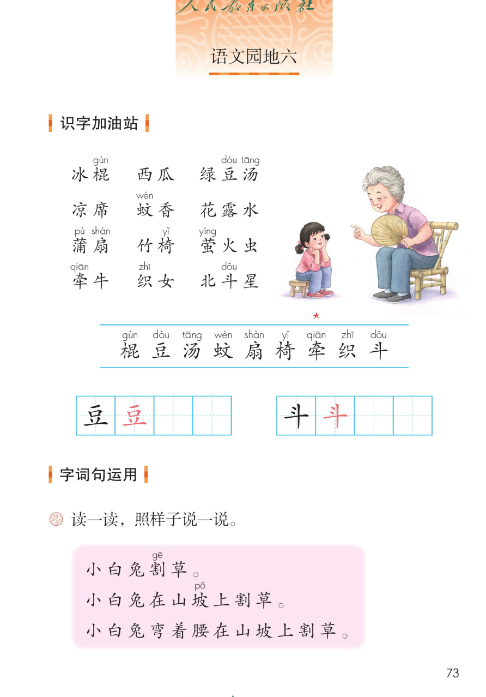
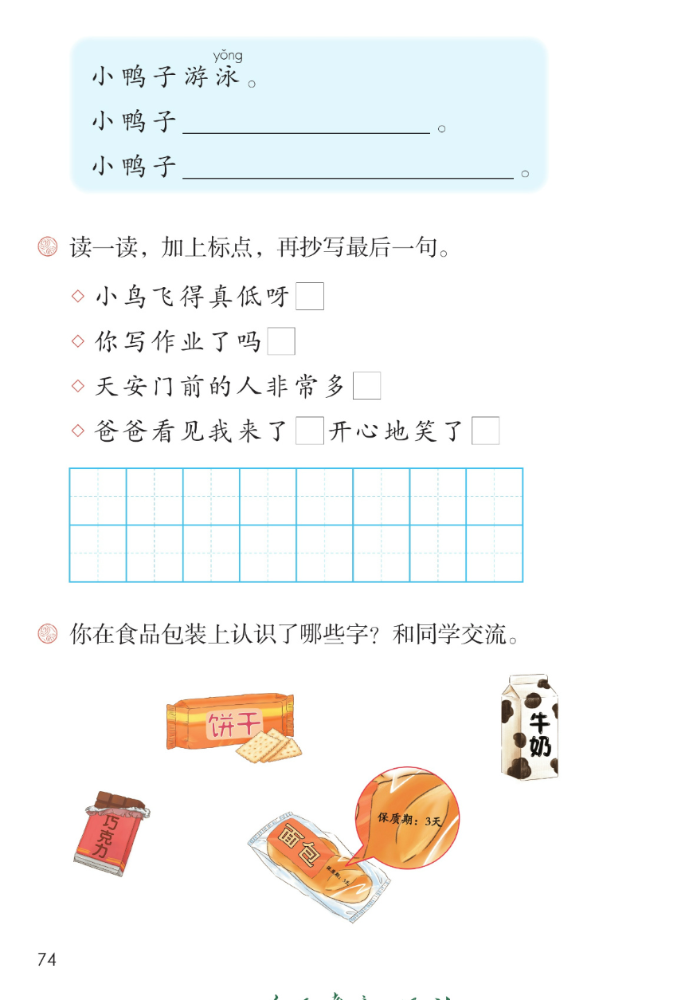
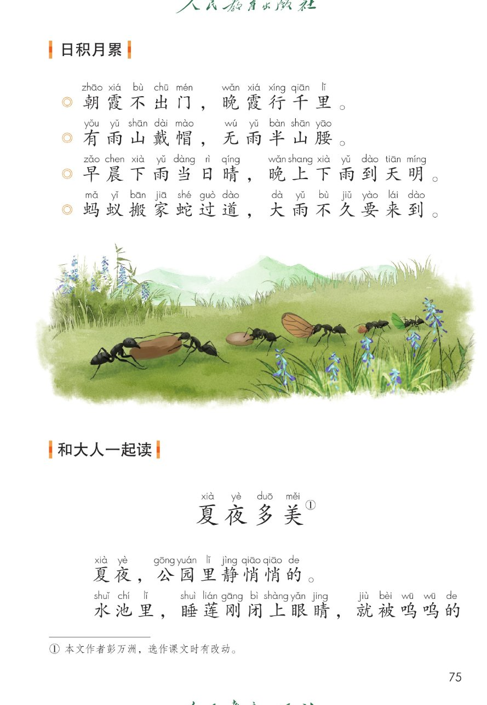
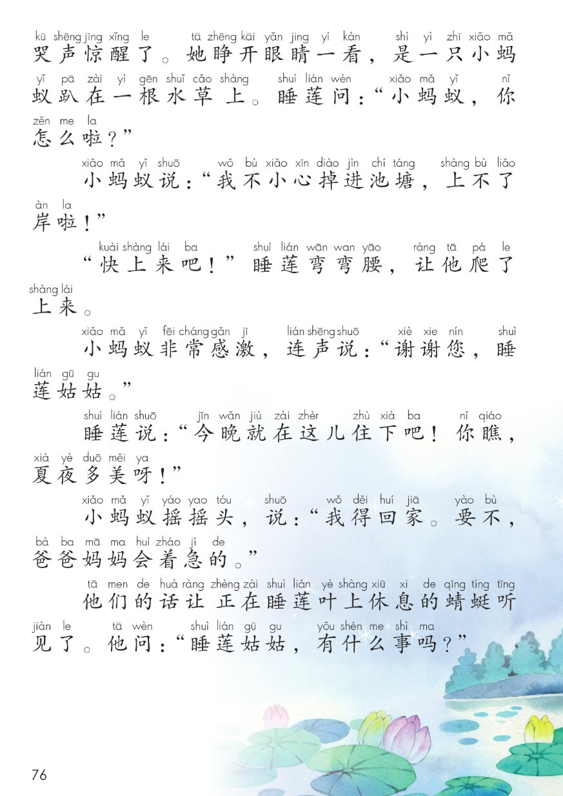
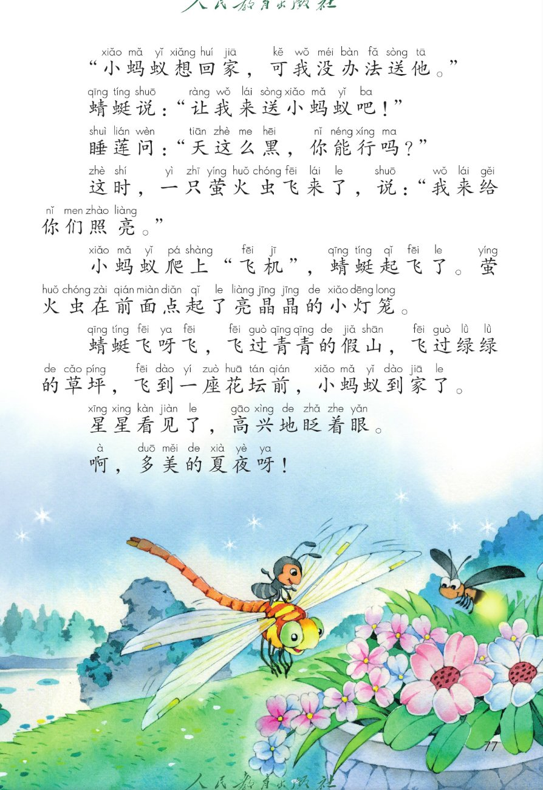

统编版 · 一年级下册 · 第六单元 · 语文园地六
语文园地六
识字加油站 · 字词句运用 · 日积月累
和大人一起读 夏夜多美
四块活动点读听一听拼音可开关课本原页放大
这一页把语文园地六整块搬了上来：先认一认夏天的 12 个词语，发现它们和吃、用、夏夜有关；再练把句子一句句说长、给四个句子加标点、说说在食品包装上认识的字；接着积累 4 条看天识天气的谚语；最后和大人一起读《夏夜多美》——睡莲姑姑、蜻蜓和萤火虫，一起把小蚂蚁送回家。🌙
① 识字加油站 · 夏天的事物 课本第 73 页 12 词语 / 识字条 9 字 / 田字格 2 字
词语里生字上方的注音照录课本（棍 gùn / 豆 dòu / 汤 tāng / 蚊 wén / 扇 shàn / 椅 yǐ / 萤 yíng / 牵 qiān / 织 zhī / 斗 dǒu）；拼音只作显示，不进朗读稿。识字条上方课本印有一个红色 ＊，此处一并照录说明。
识字条（课本第 73 页蓝色横线之间，9 字照录）：
田字格练写（课本第 73 页：左表 豆、右表 斗，各带一个红色范字，照录）：
读一读，你发现了什么（配套提示，供参考）：这 12 个词语都和夏天有关：有吃的、有用的，还有夏夜天上、草丛里能看见的。🌈 归类与解说为配套内容，原文以课本原页为准。
② 字词句运用 · 把句子说长 / 加标点 / 生活识字 课本第 73~74 页 6 句 / 4 句 / 5 处包装字
课本题目（照录）读一读，照样子说一说。
课本第 73 页 · 粉色方框（照录）
小白兔割草。
小白兔在山坡上割草。
小白兔弯着腰在山坡上割草。
课本第 74 页 · 蓝色方框（照录，两条横线为课本空格）
小鸭子游泳。
小鸭子____________。
小鸭子____________。
我也会照样子说（配套说话支架，供参考，答案不唯一）：第一句只说「谁 做什么」；第二句加上在哪里；第三句再加上怎么样地。课本蓝色方框印的是空格，没有印答案，以教材为准。
课本题目（照录）读一读，加上标点，再抄写最后一句。
小鸟飞得真低呀□
□ 为课本空格
参考答案（供参考）：！
「呀」带着惊讶、感叹的语气，用感叹号。
你写作业了吗□
□ 为课本空格
参考答案（供参考）：？
这是在问别人，用问号。
天安门前的人非常多□
□ 为课本空格
参考答案（供参考）：。
这是在说一件事，话说完了，用句号。
爸爸看见我来了□开心地笑了□
□ 为课本空格
参考答案（供参考）：，。
一句话中间停一停用逗号，说完用句号；第四行最后一句要抄进田字格。
加哪个标点（配套参考答案，供参考）：① 小鸟飞得真低呀！ ② 你写作业了吗？ ③ 天安门前的人非常多。 ④ 爸爸看见我来了，开心地笑了。 课本还要求把最后一句抄进田字格（2 行共 16 格）。🌈 课本只印空格不印答案，以教材和字典为准。
课本题目（照录）你在食品包装上认识了哪些字？ 和同学交流。
和同学说一说（配套练习设计，供参考，答案不唯一）：包装上印着吃的东西叫什么，也印着能放多久。你还包装上见过哪些字？🌈 生活里也能识字，说得清楚就对。
「割、坡、泳」与识字条生字的拼音只作可见 ruby，不进朗读稿；「保质期：3天」的数字与冒号照录课本，朗读稿改说「保质期，三天」便于听读，原文以课本原页为准。
③ 日积月累 · 看天识天气的谚语 课本第 75 页 4 条 · 逐条点读
朝霞不出门，晚霞行千里。
课本日积月累 · 气象谚语（照录）
有雨山戴帽，无雨半山腰。
课本日积月累 · 气象谚语（照录）
早晨下雨当日晴，晚上下雨到天明。
课本日积月累 · 气象谚语（照录）
蚂蚁搬家蛇过道，大雨不久要来到。
课本日积月累 · 气象谚语（照录）
谚语什么样（配套解说，供参考）：这四句话都是看天识天气的经验：看朝霞晚霞、看山上的云、看下雨的时辰、看蚂蚁和蛇。句子短、好记，读起来也顺口。🌈 意思解说为配套内容，以教材和字典为准。
拼音照录课本（第三条「早晨」的「晨」注 chen、「晚上」的「上」注 shang，都是轻声不标调，未改成 chén / shàng）；拼音只作显示，不进朗读稿。
④ 和大人一起读 · 夏夜多美 课本第 75~77 页 16 段 · 点一段读一段
课题（照录，右上带题号 ①）
夏夜多美①
课本第 75 页（配套分节，供参考）
夏夜，公园里静悄悄的。
水池里，睡莲刚闭上眼睛，就被呜呜的哭声惊醒了。她睁开眼睛一看，是一只小蚂蚁趴在一根水草上。睡莲问：“小蚂蚁，你怎么啦？”
课本第 76 页（配套分节，供参考）
小蚂蚁说：“我不小心掉进池塘，上不了岸啦！”
“快上来吧！”睡莲弯弯腰，让他爬了上来。
小蚂蚁非常感激，连声说：“谢谢您，睡莲姑姑。”
睡莲说：“今晚就在这儿住下吧！你瞧，夏夜多美呀！”
小蚂蚁摇摇头，说：“我得回家。要不，爸爸妈妈会着急的。”
他们的话让正在睡莲叶上休息的蜻蜓听见了。他问：“睡莲姑姑，有什么事吗？”
课本第 77 页（配套分节，供参考）
“小蚂蚁想回家，可我没办法送他。”
蜻蜓说：“让我来送小蚂蚁吧！”
睡莲问：“天这么黑，你能行吗？”
这时，一只萤火虫飞来了，说：“我来给你们照亮。”
小蚂蚁爬上“飞机”，蜻蜓起飞了。萤火虫在前面点起了亮晶晶的小灯笼。
蜻蜓飞呀飞，飞过青青的假山，飞过绿绿的草坪，飞到一座花坛前，小蚂蚁到家了。
星星看见了，高兴地眨着眼。
啊，多美的夏夜呀！
课本页脚注释（照录）：① 本文作者彭万洲，选作课文时有改动。
和大人一起说一说（配套练习设计，供参考，答案不唯一）：① 小蚂蚁为什么回不了家？睡莲姑姑请它留下来，它为什么摇摇头？② 谁愿意送它？天黑了，谁来说「我来给你们照亮」？③ 数一数，一路上飞过了哪些地方？④ 和大人一人读一段，最后一起读「啊，多美的夏夜呀！」🌈 说得清楚就对。
课本为这篇短文全文逐字注音（拼音见下方课本原页）；此处沿用园地三《谁和谁好》、园地五《孙悟空打妖怪》的做法，只呈现汉字原文，不擅自补配注音。第 75 页末「就被呜呜的」与第 76 页开头「哭声惊醒了。」是跨页同一句，此处按完整句子连排。分节标签为配套划分，原文以课本原页为准；对话里的中文引号保留在可见文字，朗读稿去掉引号便于听读。
课本原页 · 第 73~77 页
点图放大

第 73 页 · 识字加油站（夏日 12 词语 / 识字条 / 田字格）· 字词句运用 照样子说一说

第 74 页 · 字词句运用（小鸭子游泳 / 加标点 / 食品包装上认字）

第 75 页 · 日积月累 四条气象谚语 · 和大人一起读 夏夜多美（含页脚注释①）

第 76 页 · 夏夜多美（续）· 小蚂蚁与睡莲姑姑的对话

第 77 页 · 夏夜多美（末）· 蜻蜓与萤火虫送小蚂蚁回家
教材原页截图照录；页面里的提示、分组与练习设计为配套内容，不冒充教材原文。